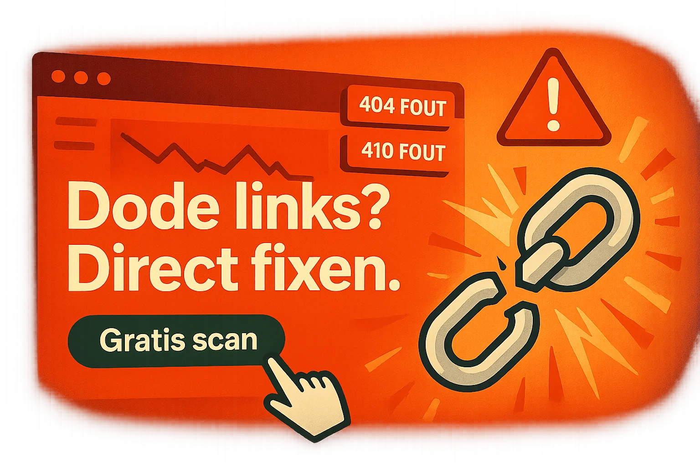

Google straft 404's af. Bezoekers haken af. Dodelink fixt het – snel.
Eenmalig €15 • Automatische 301-redirects • Rapport & CSV
Start Gratis ScanVandaag al 27 Shopify-winkels geholpen – Nog 8 scans beschikbaar
-2 posities per 10 kapotte links. Google crawlt je site, vindt errors en straft je af.
88% verlaat je site na een 404. Ze kopen bij de concurrent.
Gemiddeld €247/maand verlies per 10 kapotte links. Dat tikt aan.
Kapotte links = minder vertrouwen. "Als de site al niet werkt…"
Volledige crawl van je Shopify-winkel. We vinden alle kapotte interne links.
Automatische 301-redirects. Oude URL → juiste pagina. Geen weglopers meer.
Rapport + CSV. Duidelijk overzicht van fouten, fixes en SEO-advies.
Klaar binnen 10 minuten. Geen wachtrij. Direct resultaat.
"In 8 minuten waren 34 kapotte links gefixt. Conversie +19% in een week. Beste €15 ooit!"
– Marcus V., FitnessGear
"67 404's opgelost en rankings van p3 naar p1 in 3 weken."
– Sarah K., BeautyBox
"€400/maand verlies stopgezet. Na fix direct +28% sales."
– Tom R., TechGadgets
Vul je winkel-URL in en betaal veilig met iDEAL/kaart (€15).
Dodelink crawlt je site, vindt 404/410 en zet automatische 301-redirects.
Ontvang je rapport (PDF + CSV) en eventuele extra SEO-tips.
Vul je Shopify-URL in en we beginnen direct
🔒 Veilig betalen • 💯 Geld-terug-garantie
⚡ Gemiddelde verwerking: 7 minuten